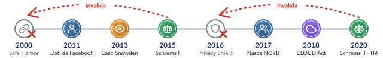

Max Schrems e la nascita di NOYB
Studente nella Silicon Valley, chiede a Facebook tutti i dati sul suo conto: riceve un CD-ROM di oltre 1.200 pagine, con chat e informazioni eliminate. Avvia un contenzioso sistematico e nel 2017 fonda la ONG NOYB – European Center for Digital Rights.
«Schrems I»: cade il Safe Harbor
Dopo le rivelazioni di Edward Snowden (2013) sulla sorveglianza di massa dell’NSA (PRISM), la Corte dichiara invalido l’accordo UE-USA del 2000: le leggi di sorveglianza USA prevalevano sui diritti fondamentali europei, senza tutele giurisdizionali effettive.
«Schrems II»: cade il Privacy Shield, nasce la TIA
Annullato anche il secondo accordo (2016). Le Clausole contrattuali tipo (SCC) restano valide ma non bastano da sole: chi esporta dati deve condurre una Transfer Impact Assessment e adottare misure supplementari.
CLOUD Act: la tensione con il GDPR
Le autorità inquirenti USA possono chiedere i dati ai provider soggetti alla loro giurisdizione ovunque si trovino i server, anche nell’UE. La TIA diventa centrale nella gestione di piattaforme cloud e di IA.